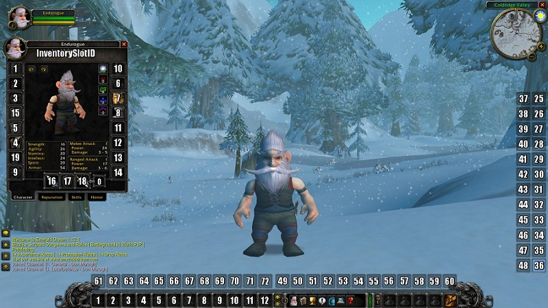

Rogue
Author: Oto / Nostalrius
Source: Nostalrius
↗
Rogues are users of dirty tricks, preferring to hide in the shadows and attack from an advantageous position rather than go toe-to-toe in a fair fight (Like a warrior would). The signature ability of a rogue is stealth, an invisibility-like ability that allows them to pick and choose their fights. They possess immensely powerful melee DPS abilities, and have a wide variety of debuffs designed to turn the fight to their advantage, from stuns to poisons. Against a single target, it is difficult to out-damage a well-played and well-equipped rogue, but they are rather fragile, being only able to wear leather armor. Unlike other classes (except cat-form druids), rogues use energy to perform special attacks and have a shortened global cooldown.
Rogues 3 talent specializations are Combat, Assasination, and Sublety.
If you'd like a more in-depth look at the Rogue class, check out the video below.
Talents
Leveling Spec

End-Game Builds
The following Specs become more powerful when you reach a higher gear level (~AQ40 Gear) or you just get all possible Worldbuffs and reach the Critcap.

Alliance Sidenote: Imp. Poisons is higher DPS than Imp. Eviscerate, but in longer fights you going to risk to lose all poison stacks, especially in Naxx. This is getting fixed someday. Lets hope so. Horde Sidenote: Imp Eviscerate is better than Imp Poisons by ~2 DPS, depends on points spent. If you have Windfury available.
Pre-Raid Gear
Combat Sword Spec [Combat Dagger Spec]
Any items wrapped in [ ] are for combat dagger spec.
- Helm: Mask of the Unforgiving
- Neck: Mark of Fordring
- Shoulder: Truestrike Shoulders
- Cloak: Cape of the Black Baron
- Chest:
- Wrist: Bracers of the Eclipse
- Gloves: Devilsaur Gauntlets
- Belt: Cloudrunner Girdle [Mugger's Belt]
- Legs: Devilsaur Leggings
- Boots: Swiftwalker Boots
- Ring: Tarnished Elven Ring
- Ring: Painweaver Band
- Trinket: Hand of Justice
- Trinket: Blackhand's Breadth
- Main-Hand Weapons:
- Off-Hand Weapons:
- Ranged:
The Lobotomizer uses a debuff slot and i don’t recommend it for 40 man raids. Its totally fine in 5-20man.
Distracting Dagger is just an example, its best when you don’t have Mugger’s Belt, otherwise every other
fast Dagger is nice to have with a high dps rate.
Stat Priorities
-
Agility
- Increases attack power with both melee and ranged weapons by 1
- Increases your crit chance by 1% per 29 Agility
- Increases Armor and Dodge -
Strength
- Increases attack power with melee weapons by 1. -
Stamina
- Increases health points by 10 per point -
Intellect
- Increases the rate at which weapon skills improve -
Spirit
- Increases health & mana regeneration rates = useless stat -
Armor
- Decreases the amount of damage taken from physical attacks - A stat you don’t have to care about
Enchants
Ensuring you have the proper enchants on your gear not only will ensure you are maximizing your DPS output, but will also make sure you are taken seriously.
- Helm: Lesser Arcanum of Voracity
- Shoulder: +5 All Resistance
- Cloak: Lesser Agility
- Chest: Greater Stats
- Wrist: +9 Strength
- Gloves: Greater Agility
- Legs: Lesser Arcanum of Voracity
- Boots: 8% run speed increase. (Mobility is alot better than 7agi).
- Main-Hand Weapon: Crusader
- Off-Hand Weapon: Crusader
Consumables
Here is a list of useful consumables you should bring to a raid.
Mandatory Stuff:
- Elixir of the Mongoose or Greater Agility
- Winterfall Firewater
- Juju Power
- Grilled Squid / Blessed Sunfruit
- Instant Poison VI
- Heavy Runecloth Bandage
- Flash Powder (Used for Vanish)
- Blinding Powder (Used for Blind)
- Thistle Tea
- Crystal Charge / Ez-Thro Dynamite II / Stratholme Holy Water (for aoe)
Additional / Survivability
- Flask of the Titans
- Sheen of Zanza
- Spirit of Zanza
- Swiftness of Zanza
- Elixir of Fortitude
- Elixir of Demonslaying (for Doomlord Kazzak)
- Elixir of Poison Resistance (nice for AQ/nax)
- Gift of Arthas +10 Shadow res
- Major Troll’s Blood Potion
- Rumsey Rum Black Label
- Dirge’s Kickin’ Chimaerok Chops
- Free Action Potion for all bosses, who stun & do movement impairing effects
- Jungle Remedy nice to have for 5 mans
- Major Healing Potion
- Restorative Potion
- All Resistance Potions
Macros
This macro allows you to attack your target with Sinister Strike and turns on the auto attack. Useful for every target switch when you don’t have energy left or you don’t wanna right click on each target. Attention: you need to put the Spell Attack in your action bar! In my example I put the Spell on the first action bar on the slot 9. This can also be used for BS or HEMO. Just replace the spell name and the energy cost.
Sinister (BS/Hemo) + Auto Attack
/cast Sinister Strike
/script if not IsCurrentAction(9) then UseAction(9) end;
Use Trinket Button
/script UseInventoryItem(13);
This Screenshot can help you by finding the best positions and slot numbers for your macros.
